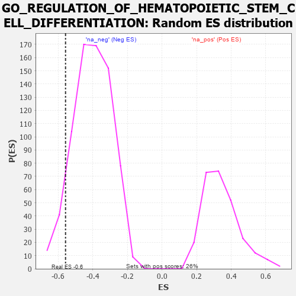

| | | Dataset | 7d |
| Phenotype | NoPhenotypeAvailable |
| Upregulated in class | na_neg |
| GeneSet | GO_REGULATION_OF_HEMATOPOIETIC_STEM_CELL_DIFFERENTIATION |
| Enrichment Score (ES) | -0.55793756 |
| Normalized Enrichment Score (NES) | -1.3860518 |
| Nominal p-value | 0.07462686 |
| FDR q-value | 0.35679138 |
| FWER p-Value | 1.0 |
Table: GSEA Results Summary
 Fig 1: Enrichment plot: GO_REGULATION_OF_HEMATOPOIETIC_STEM_CELL_DIFFERENTIATION
Fig 1: Enrichment plot: GO_REGULATION_OF_HEMATOPOIETIC_STEM_CELL_DIFFERENTIATION
Profile of the Running ES Score & Positions of GeneSet Members on the Rank Ordered List
| PROBE | GENE SYMBOL | GENE_TITLE | RANK IN GENE LIST | RANK METRIC SCORE | RUNNING ES | CORE ENRICHMENT | | 1 | YAP1 | | | 1041 | 0.475 | -0.0873 | No |
| 2 | KMT2A | | | 1130 | 0.458 | -0.0564 | No |
| 3 | PSMD7 | | | 1152 | 0.454 | -0.0175 | No |
| 4 | PSMD2 | | | 1181 | 0.450 | 0.0202 | No |
| 5 | PSMD4 | | | 1811 | 0.335 | -0.0281 | No |
| 6 | PSMD6 | | | 1858 | 0.326 | -0.0040 | No |
| 7 | PSME4 | | | 2143 | 0.285 | -0.0136 | No |
| 8 | PSMF1 | | | 2251 | 0.268 | -0.0025 | No |
| 9 | PSMD5 | | | 2560 | 0.218 | -0.0212 | No |
| 10 | PSMD9 | | | 3179 | 0.125 | -0.0875 | No |
| 11 | PUS7 | | | 3254 | 0.113 | -0.0865 | No |
| 12 | TAL1 | | | 4064 | -0.018 | -0.1865 | No |
| 13 | ABL1 | | | 4125 | -0.027 | -0.1916 | No |
| 14 | PSME3 | | | 4280 | -0.056 | -0.2059 | No |
| 15 | GATA3 | | | 4614 | -0.120 | -0.2367 | No |
| 16 | PRKDC | | | 4955 | -0.189 | -0.2621 | No |
| 17 | PSMD1 | | | 5674 | -0.367 | -0.3187 | Yes |
| 18 | LDB1 | | | 5944 | -0.451 | -0.3112 | Yes |
| 19 | PSMD3 | | | 7907 | -2.887 | -0.2933 | Yes |
| 20 | PSMD8 | | | 7931 | -3.286 | 0.0050 | Yes |
Table: GSEA details [plain text format]

Fig 2: GO_REGULATION_OF_HEMATOPOIETIC_STEM_CELL_DIFFERENTIATION: Random ES distribution
Gene set null distribution of ES for GO_REGULATION_OF_HEMATOPOIETIC_STEM_CELL_DIFFERENTIATION